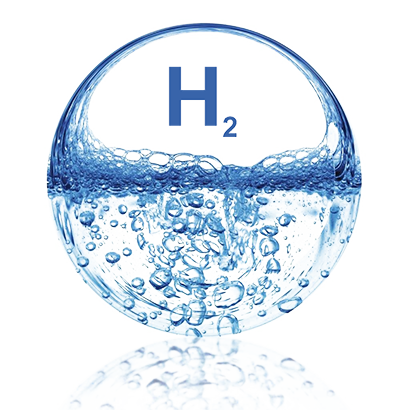
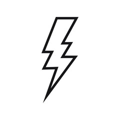
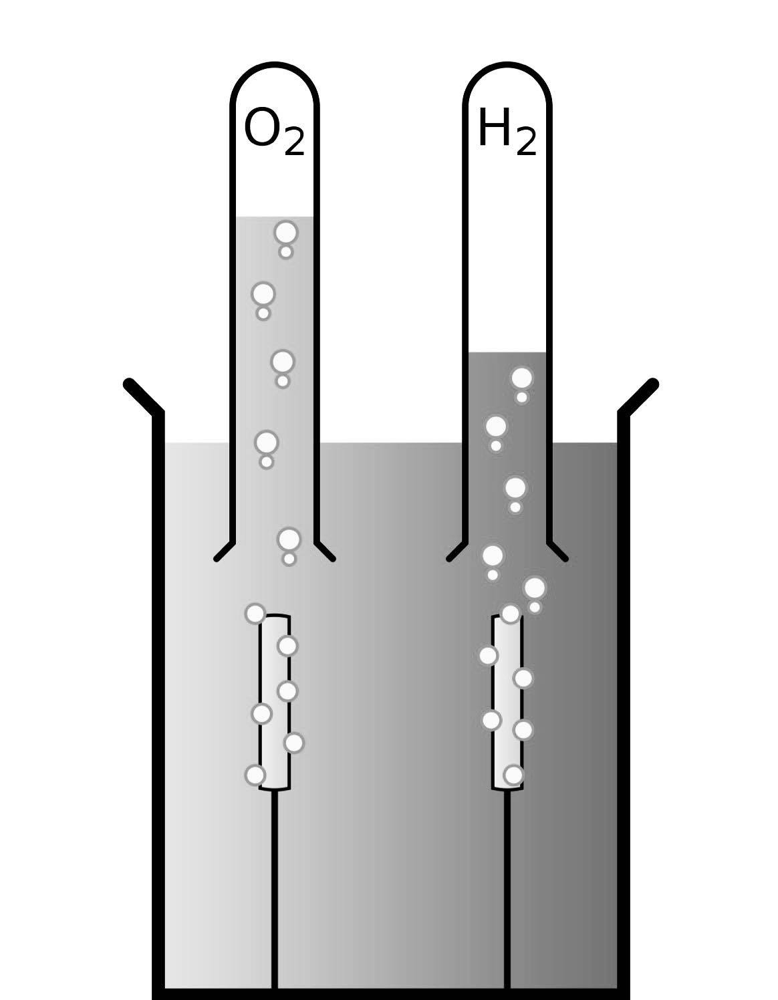
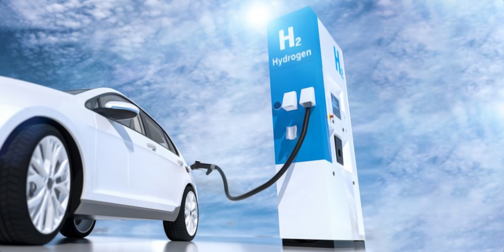

VODIK KOT GORIVO PRIHODNOSTI?
Naša rešitev je čiščenje ozračja pri
oskrbovanju naših gospodinjstev z energijskimi potrebami
NAŠ PROJEKT
Zasnovana ideja

Vir električne energije
Vir električne oskrne gospodinjstva

Eletrolizni proces
Proces elektrolize kjer se z dvema
elektrodama v napravi iz vode loči vodik in kisik
Kaj gospodinjstvo pridobi?
Pasivno ogrevanje prostorov
Orgevanje sanitarne vode
Dimnik kisika
Tvorbo lastnega goriva
Doniraj
